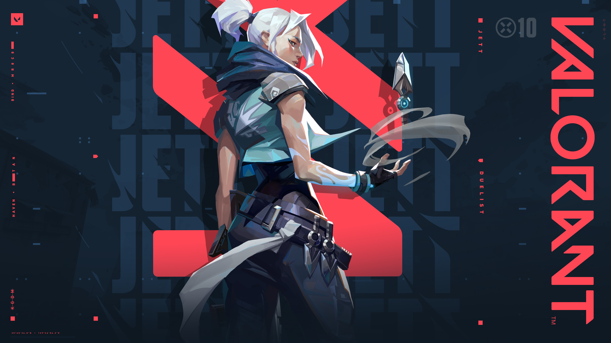
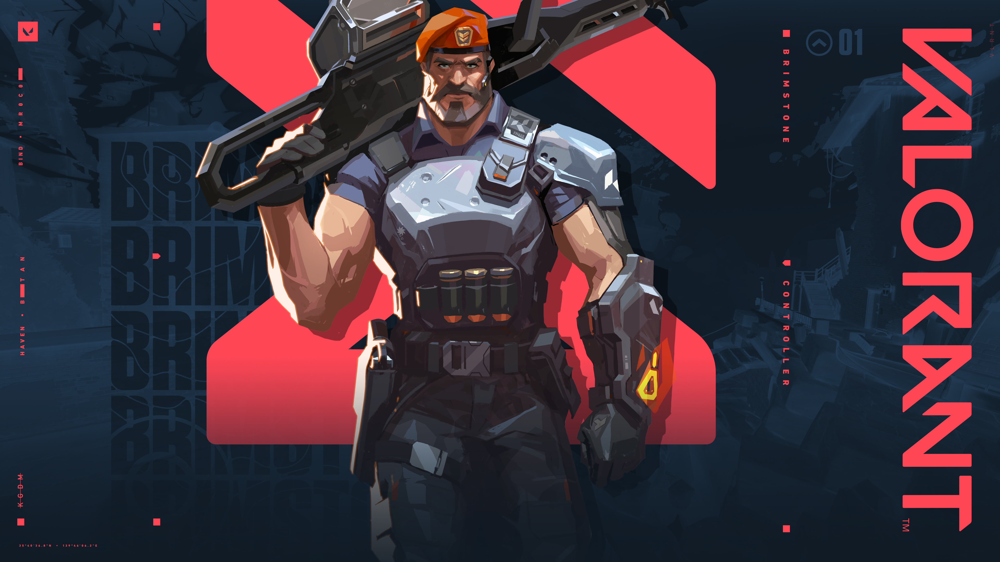
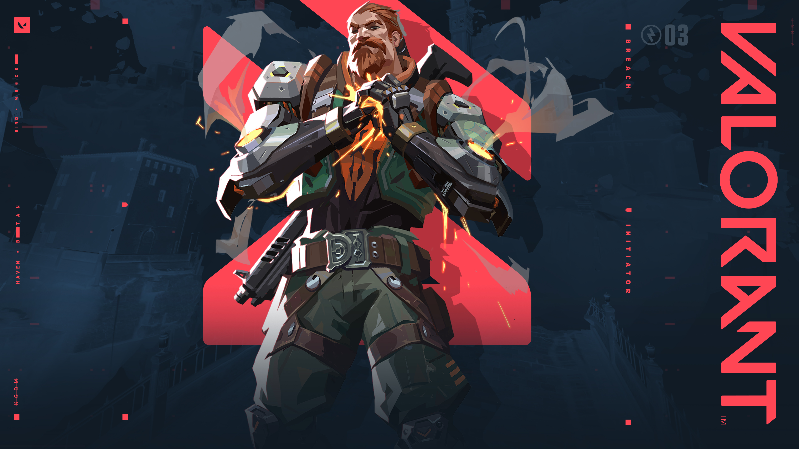
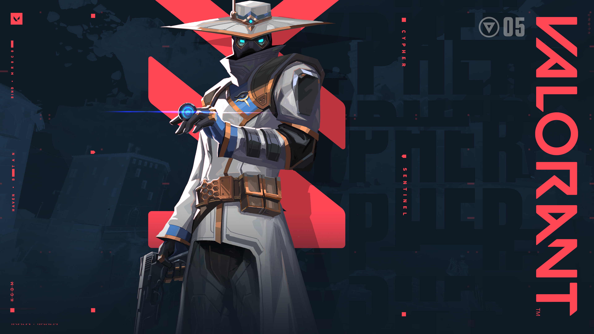

Agenter
I Valorant finns det fyra olika "roller" som man kan välja. De olika rollerna har egna uppgifter att göra för att hjälpa laget försvara eller attackera motståndar laget.
För att få det starkaste laget så måste man kombinera dem olika rollerna för att få en bra blandning av försvar och attack.
Detta är varför samarbete är så extremt viktigt i Valorant
De 4 roller i Valorant
Duelist
Duelisterna har en av det viktigaste rollerna i hela spelet, en Duelists jobb är att ta utrymme åt sitt lag så att dem kan komma in på A eller B för att plantera Spiken.
Utan en Duelist så är det vanligtvis väldigt svårt att få in site lag för att plantera Spiken.

Controller
En Controllers jobb är att lägga ut "smokes" eller rökgranater på svenska, för att blockera motståndarna så att dem inte kan attackera eller försvara enkelt.
Deras jobb är även att använda sina rökgranater för att deras Duelist ska komma in simplare på dem olika platserna.

Initiator
En Initiators jobb är att bland annat hjälpa sin Duelist att komma in på platserna genom att använda "stuns" (vilket är en ability som gör att motståndaren blir stunnad och inte kan skjuta eller röra sig lika eneklt).
En Initiator har vanligtvis också "flashbangs", eller (distraktionsgranat på svenska) vilket gör att motståndarna som blir träffade av deras flash inte kan se något på mellan 2-5 sekunder beroende på vilket agent man spelar.

Sentinel
Sentinels jobb är mestadels på försvars sidan då dem har abilities som hjälper dem att hålla områden, som tillexempel ett torn som skjuter på motståndarna ifall dem går innanför tornets syn.
Dock när man spelar Sentinel på attackerar sidan så måste man fokusera på att flanka motståndar laget, då dem inte har något bra sätt att ta sig in på platserna.
